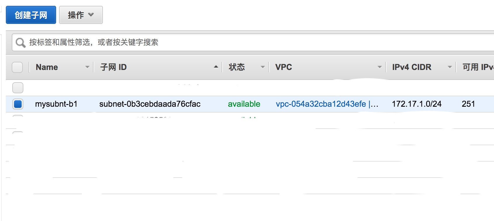

虽然可以直接在aws后台手动创建服务器等资源，但是这个创建过程重复过程成本比较高，所以可以把这个服务器资源使用terraform这个工具来管理，就可以把服务器资源的管理写到文件中了，服务器资源的管理可以通过修改文件实现
terraform支持aws，aliyun，ucloud等服务商，完整的服务商列表参考：https://www.terraform.io/docs/providers/
terraform是一个命令行工具，下载地址：https://www.terraform.io/downloads.html
生成api访问密钥
到这个页面https://console.amazonaws.cn/iam/home?#/users 添加新用户，访问类型设置成编程访问

将用户添加到Administrators组，这样这个用户就有访问aws资源的权限了
点击下一步，操作效果如下
这里记录下这里生成的访问密钥ID和私有访问密钥，terraform通过这个密钥认证
配置访问密钥
把上面获取到的aws写入terraform配置文件，比如config.tf
provider "aws" {
access_key = "aws的accesskey"
secret_key = "aws的secretkey"
region = "aws地区代码"
}
aws代码列表参考：https://docs.aws.amazon.com/zh_cn/general/latest/gr/rande.html
然后使用这个terraform init命令下载aws插件，操作效果如下
定义资源
定义vpc
vim vpc.tf
resource "aws_vpc" "myvpc" {
cidr_block = "172.17.0.0/16"
enable_dns_hostnames = true
enable_dns_support = true
instance_tenancy = "default"
tags = {
Name = "myvpc"
}
}
使用terraform apply在aws上创建这个资源
可以看到这个这个vpc已经创建成功了，可以在aws界面上确认
记下这个vpc的id：vpc-054a32cba12d43efe
定义子网
vim sn.tf
resource "aws_subnet" "mysubnt-b1" {
vpc_id = "vpc-054a32cba12d43efe"
cidr_block = "172.17.1.0/24"
availability_zone = "cn-northwest-1b"
map_public_ip_on_launch = false
tags {
Name = "mysubnt-b1"
}
}
查看操作效果
在这个aws界面上确认

记下这个subnet id: subnet-0b3cebdaada76cfac
定义实例
vim ec2.tf
resource "aws_instance" "myinstance" {
ami = "ami-0135cb179d33fbe3e"
instance_type = "t2.medium"
key_name = "dev"
subnet_id = "subnet-0b3cebdaada76cfac"
private_ip = "172.17.1.101"
tags = {
Name = "myinstance"
}
}
同样可以在aws网页上确认
更新资源
比如把上面这个ec2规格修改成：t2.small
vim ec2.tf修改后的ec2.tf如下
resource "aws_instance" "myinstance" {
ami = "ami-0135cb179d33fbe3e"
instance_type = "t2.small"
key_name = "dev"
subnet_id = "subnet-0b3cebdaada76cfac"
private_ip = "172.17.1.101"
tags = {
Name = "myinstance"
}
}
然后使用这个terraform apply命令执行修改
可以看到terraform已经成功识别到了这个修改
可以在aws web界面上进行确认
删除资源
可以使用命令terraform destroy删除上面创建的所有资源
操作效果如下
可以看到资源已经被删除了
导入资源
这个terraform可以导入已经存在的资源，参考：https://www.terraform.io/docs/import/index.html
一些注意的点
- 这个terraform是有状态的，*.state就是保存状态的文件
还可以关注的资源如下：
- internet网关
- nat网关
上面操作后的文件结构如下
这个terraform的配置文件可以定义变量，参考：https://www.terraform.io/docs/configuration/variables.html
使用这个terraform可以部署kong网关，参考：https://github.com/kevholditch/terraform-provider-kong
参考资料
定义负载均衡器参考：https://www.terraform.io/docs/providers/aws/r/elb.html
- https://www.infoq.cn/article/9-reasons-why-terraform-is-a-pain-but-you-should-still-care
- https://www.terraform.io/docs/providers/aws/
- https://www.terraform.io/docs/providers/aws/r/ami.html
- https://www.terraform.io/docs/providers/
- https://www.terraform.io/downloads.html
- https://aws.amazon.com/cn/ec2/instance-types/
- https://www.terraform.io/docs/configuration/variables.html